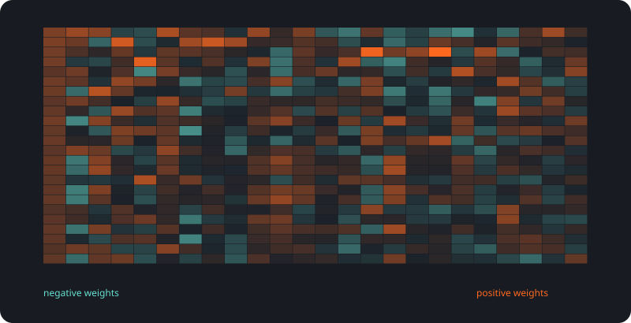
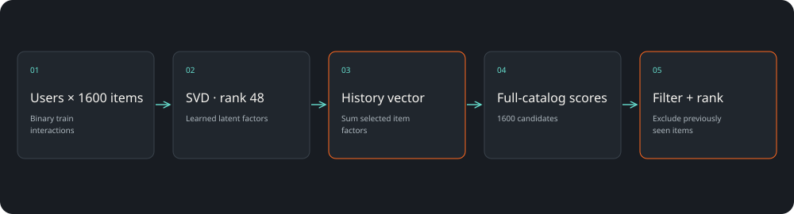
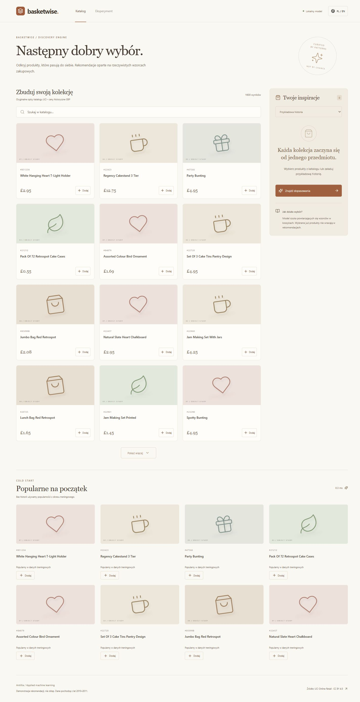

Rekomendacje z historii
Wybrane już produkty są wykluczane z kolejnej listy.
System rekomendacji / CASE STUDY 05
Zbudowaliśmy silnik rekomendacji, który łączy historię zakupów z rankingiem produktów. Porównuje popularność, podobieństwo koszyków i faktoryzację macierzy na przyszłych zakupach.
NDCG@10 · test offline
1426 użytkowników testowych

SAVED ARTIFACTS / REPRODUCIBLE RESULTSLista bestsellerów jest dobrym początkiem, ale nie uwzględnia zainteresowań konkretnej osoby. Chcieliśmy sprawdzić, ile daje wykorzystanie historii.
Wybrane już produkty są wykluczane z kolejnej listy.
Gdy brakuje historii, system wraca do popularności z train.
1600 kandydatów; bez sztucznego ułatwiania testu przez losowanie negatywów.
1426 użytkowników testowych
NDCG@10 ↑
Ta ilustracja została wygenerowana z wag lub reprezentacji używanych w projekcie. Ułatwia rozmowę o architekturze, ale sama nie wyjaśnia każdej decyzji modelu.
React · FastAPI · SciPy sparse · scikit-learnBiały świecznik w kształcie serca → w rekomendacjach pojawiają się powiązane produkty, np. czerwony wariant i podobne dekoracje. Powód wyboru odwołuje się do historii.

Pomoc w znalezieniu kolejnych produktów powiązanych z zainteresowaniem użytkownika.
Prototyp do integracji z katalogiem i rzeczywistą historią sklepu.
Oddzielenie jakości rankingu offline od biznesowego testu konwersji.
Wynik dotyczy produktów obecnych w treningowym katalogu i nowych dla użytkownika. NDCG nie jest konwersją ani przychodem. Dane są historyczne, ceny w GBP; interfejs demonstracyjny nie jest sklepem.
UCI Online Retail · CC BY 4.0 ↗Projekt demonstracyjny zespołu Antillia. Scenariusze zastosowań opisują możliwości adaptacji; nie są deklaracją wdrożenia u klienta.
Pokaż nam problem. Dobierzemy zakres, dane i sposób sprawdzenia rozwiązania.
Omów swój projekt